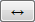

Working with Crosswalks
Licensing and Enablement
The availability of any asset collection is determined by what is (a) licensed and (b) configured under Server Administration. To install a license or to view the currently licensed features, see Administrator Guide section on Product Registration` . To configure which licensed collection types are currently enabled or disabled, see Administrator Guide section on EDG Configuration Parameters.
For general licensing information and available asset collections and packages, see the TopQuadrant website.
Overview of Crosswalks
The Crosswalks assetc collecion type let you create connections between the assets in two different collections. This is especially useful for defining connections between two different standard vocabularies or between a standard one and a specialized local one. Applications can use saved crosswalk connection data to enhance the use of either vocabulary by taking advantage of the connected data and metadata for search, classification, and other operations.
When creating a new Crosswalk, you will be asked to identify the From and To collection.
For each of the two collections connected by a crosswalk (From and To), you will be asked to select the class of assets to be mapped. By default, mappings will use the crosswalk:closeMatch predicate. A different mapping predicate can be specified on the Manage tab.
TopBraid EDG Display Relationship Tree Example
Mappings between two asset collections can be auto-generated by using the Generate Mappings button available in the Crosswalk Editor. The automated mapping functionality is part of the Problems and Suggestions algorithms. The Manage tab lets you set an option to automatically accept mappings that have 100% confidence.
TopBraid EDG uses fuzzy matching on asset labels to generate crosswalk mappings. Alternative mapping algorithms can be added to TopBraid EDG. Adding a new algorithm requires access to TopBraid EDG Java code and is currently supported only through TopQuadrant Professional Services. If alternative auto-mapping algorithms are available in your installation of TopBraid EDG, users will be able to select them on the Manage tab.
See also
Specific crosswalk only information is contained within this page.
Please see the Working with Asset Collections for all the general features of asset collections such as import/export, editing, user permissions, reports and settings.
Crosswalks Home
Selecting the Crosswalks link in the left-navigation pane of TopBraid EDG lists all of the Crosswalk collections currently available to the user and, it allows authorized users to create new ones.
Creating a New Crosswalk
The Crosswalks > Create New Crosswalk link opens a form with fields used to define the new Crosswalk.
Note
You can also create a Crosswalk by using a Create link in `Governance Areas (and Roles)`_ or the plus button available in the application header bar.
The Create dialog box asks for the Crosswalk’s Label (name) and, optionally, a Description.
The Crosswalk creator is set as having manager priveleges for the collection.

TopBraid EDG Create New Crosswalk Page
For both the From and To collection, select the class of mapped terms from the Entity Type drop-down list. For example, for a taxonomy users will choose Concept or one of its subclasses. For code lists, the class name often reflects the code list’s contents more directly, such as a “Market Identifier Code” class in a “Market Identifier Codes” code list.
References to Crosswalks
If an asset collection participates in a crosswalk, you will find references to crosswalk(s) in the editor under the Available Crosswalks panel. You will be able to navigate to the relevant crosswalks. This panel also lets you create a new crosswalk. When you create a new crosswalk using this panel, you do not need to specify “from” asset collection.
From your collection, click the dropdown located on the right upper corner of the page and drag Available Crosswalks somewhere in the page.

TopBraid EDG Create New Crosswalk Page
If you select an asset and then click on one of the available crosswalks, a crosswalk editor will open up with that asset pre-selected so you see what it has been mapped to in the crosswalk.
The Crosswalk Editor
The crosswalk panel has two main columns, one for each asset collection in the mapping. If the asset-type on the left side has a primary key, then it will also have a column.
Like the Search Panel in other collections, users can filter-down the displayed assets by using (a) the Free Text search, property-specific constraints added from the Filters drop-down, or the filters available in each column.
For each left-side asset, there are zero or more mapped right-side assets. The mapping can be many-to-many, so viewers can swap the left/right collections via the Toggle direction button  found in the page header.
TopBraid EDG Crosswalk Mapped Assets
To manually add a new mapping from a right-side asset to a left-side one, use the mappings panel as seen below.
First highlight the row you wish to add a mapping in the table panel. This will cause the mapping panel to refresh for that particular row. You can then enter the matches along with comments for that row. Select each match from the dropdown and click the add match button. You will see all of the mappings entered below the add match button. If needed, you can delete a mapping from there.

TopBraid EDG Crosswalk Add Match
To automatically generate potential matches, click the Generate Mappings button.
This runs the crosswalks’ ref:problems_and_suggestions_panel, which lists suggested asset mappings between the two collections.
EDG offers a default built-in generator of mappings.
If a different mapping algorithm is desired, TQ professional services can help with plugging additional algorithms for mapping crosswalks.
TopBraid EDG Crosswalk Generate Mapping
Crosswalk Operations
Export Crosswalk as a Spreadsheet
EDG Crosswalks features include the following special exporters:
Export Crosswalk as a Spreadsheet creates a comma-separated spreadsheet containing one row for each mapping in the current Crosswalk.
TopBraid EDG Export Crosswalk as a Spreadsheet Option
Including Crosswalks into Participating Asset Collections
You may want to include a crosswalk into an asset collection involved in a crosswalk, so that when you look at its resources you see matches from the crosswalk.
Note
You will only see matches on the forms and will be able to use them in search if the cross-walked entity type has a property shape for the mapping predicate. If you use a custom mapping predicate, make sure to select one that is defined for the “from” assets.
If you are using the standard mapping predicate, make sure to define it as a property for the “from” assets. When you create a new crosswalk, you can check the box offering to automatically generate a property shape for the standard match (mapping) predicate. If you did not do this when the crosswalk was created, EDG can automatically generate the necessary property definition if you do he following:
Include a crosswalk in the “from” asset collection
Navigate to an ontology in EDG that contains class and property definitions for the “from” asset collection
Select your “from” class. Then select Modify>Derive property shapes from instances … .
In the dialog that will appear, select the “from” asset collection as the place to get instances from.
See also
For more details, see `Creating Classes and Property Shapes from Data`_. If the same ontology is being used for the “to” graph, generate the inverse shape – to see matches when working with the “to” resources.
After the property has been defined, you will see the matches on the forms for the “from” resources. You will also be able to use the mapping predicate as a search results column. If the inverse was defined, you will also see matches on the forms for the “to” resources. Alternatively, to see matches for the “to” resources, use References panel.
Reporting Crosswalk Errors
Deletions or modifications to asset collections involved in a crosswalk can cause crosswalk relationship errors. Built-in EDG crosswalk constraints identify such occurrences for reporting and maintenance purposes. To use this feature, see the Problems and Suggestions panel. The Problems and Suggestions panel also auto suggests new mappings.
TopBraid EDG Crosswalk Add Match
Creating Connections using EDG Tagger
A Crosswalk is simply a set of links between assets from two different asset collections.
As alternative to a Crosswalk, TopBraid EDG’s optional Tagger and AutoClassifier module, supports creating connections between assets in asset collections called Content Tagsets. There are a couple of reasons why you may want to do this:
When creating a Content Tagset, you can select multiple mapping (tagging) predicates and then decide which to use when creating each connection. In the Crosswalks, you can only use one mapping predicate at a time. To switch to another predicate, you could update the selection on the Manage tab. However, the crosswalk table and the mappings panel will only show connections built using the currently set mapping predicate.
For building connections manually, if your “to” asset collection is a taxonomy, Tagger lets you select you select related resources by browsing taxonomical tree. You can also use full text and parametric search to find resources to connect to. In the Crosswalks, while you can bring up Taxonomy Concepts or Search panels, manual connections are always built by using the autocomplete.
If you decide to use this approach, configure a new Content Tagset by setting the “from” collection as the Content Graph and “to” collection as the Tagging Vocabulary. In the screenshot below, Geography Taxonomy has been selected as the Content Graph and IPTC Taxonomy as the Tagging Vocabulary. As you can see, “Africa” in the Geography Vocabulary has been connected (tagged) with “Africa” from the IPTC using “has exact match” predicate:
TopBraid EDG Crosswalk Add Match
See the `Using AutoClassifier`_ for further details.